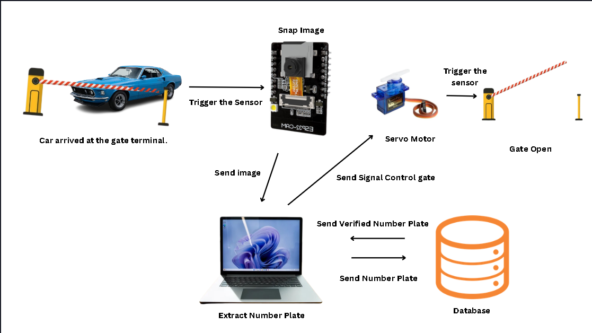
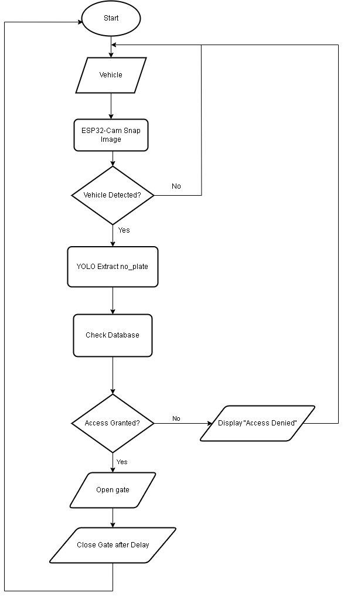
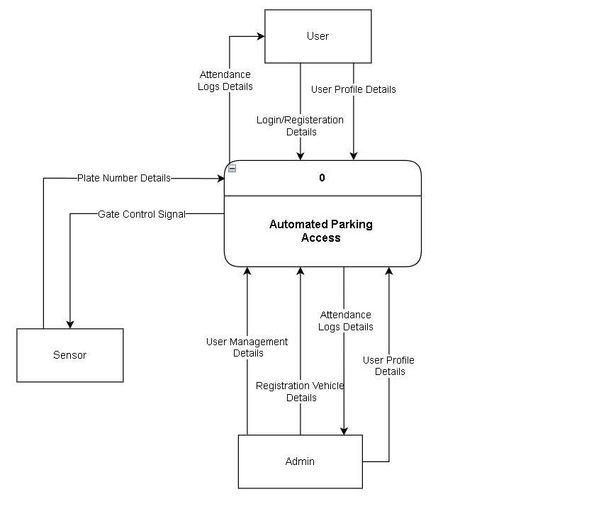
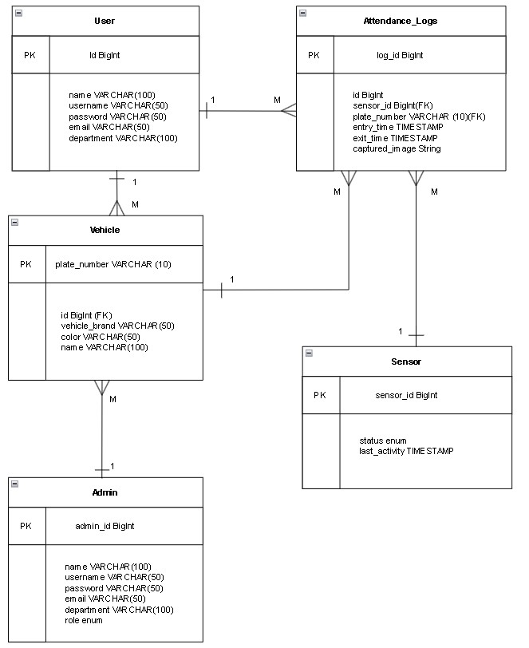
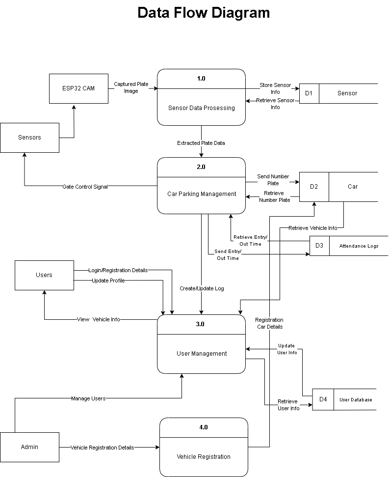
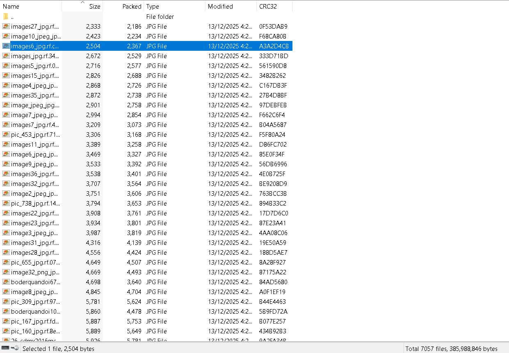
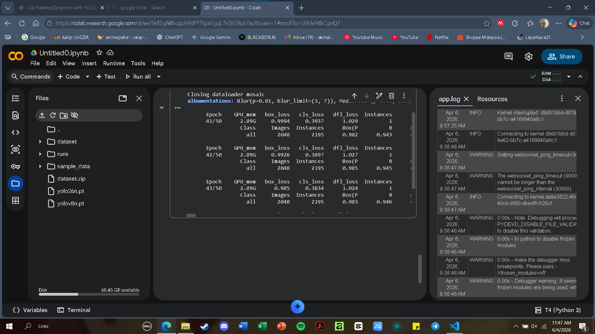
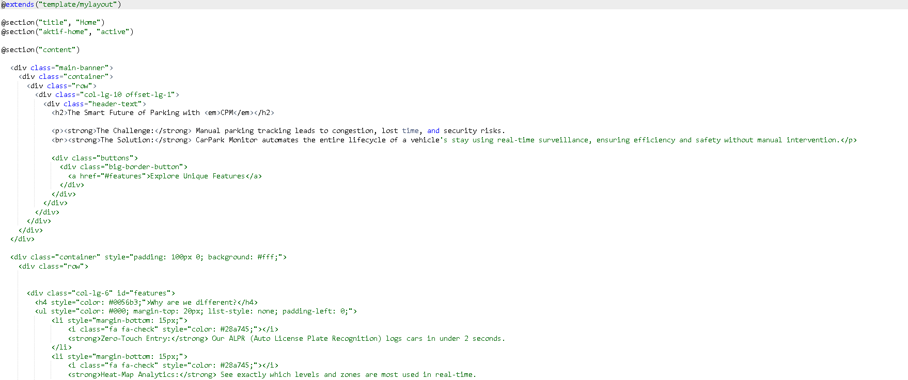

A. Career Exploration
Role Overview: A Security-focused Software Developer is responsible for writing secure code, integrating security protocols during the development lifecycle, and safeguarding applications against vulnerabilities.
Relevance to Modern Cybersecurity: As IoT devices and web applications scale, securing backend logic and data transmission is critical. For example, ensuring that an automated parking system's hardware securely communicates with a central database without data interception is a foundational cybersecurity requirement.
B. Personal Skills Assessment
An honest comparison of my current skillset against the requirements of a Security-focused Software Developer.
Additional Expertise:
- Digital Transformation: Experience in creating digital marketing assets and setting up Cash on Delivery (COD) operational flows for SMEs.
- Enterprise Data Processing: Knowledgeable in XML processing, XPath, and Java DOM parsing for managing web services architecture.
- Hardware Troubleshooting: Hands-on experience configuring OLED displays and resolving circuit wiring issues for IoT systems.
Skill Gaps to Address
While my foundation in backend architecture and hardware integration is strong, enterprise security roles require deeper knowledge of specialized testing frameworks (like SAST/DAST) and advanced cryptographic implementation for secure APIs.
C. Career Development Plan
Timeline & Goals:
- Short-term (2 Years): Secure a role as a Junior Backend/Security Developer, focusing on securing enterprise APIs and IoT data streams.
- Long-term (5 Years): Transition into a Lead Application Security Engineer, managing secure infrastructure for large-scale fintech or smart-city applications.
Action Plan:
- Certifications: Obtain CompTIA Security+ within the next 13 months to bridge the gap between application development and industry security standards.
- Tools to Master: Deepen expertise in network analysis tools like Wireshark and vulnerability scanners like OWASP ZAP.
D. Evidence of Learning
-
Automated Parking Access System (Final Year Project): Developed a proof-of-concept utilizing License Plate Optical Character Recognition (LPOCR). Integrated ESP32-CAM hardware with a Laravel backend, securely managing a
subscriptionstable.







- Community Digital Transformation (SULAM): Executed a 14-week project modernizing operations for local SMEs (Kedai Depan Koloh Nengoh) by developing digital marketing assets and a Cash on Delivery system.
E. Personal Reflection: TNG Digital
Why I want to work for TNG Digital:
TNG Digital manages massive fintech ecosystems and drives automated smart parking access across Malaysia. This aligns perfectly with my hands-on experience building automated parking logic and secure databases.
What value I can bring & Why you should hire me:
Building an LPOCR parking system provided me with a practical understanding of the logistical and technical challenges in the smart parking sector. My experience optimizing backend web services and managing enterprise data structures translates directly to the skills needed to maintain high-volume payment gateways. Furthermore, my community-based projects with local SMEs demonstrate my ability to implement tech solutions that positively impact end-users.
Strengths and Weaknesses:
- Strengths: Strong adaptability between hardware (IoT) and software (backend frameworks), allowing me to understand the full lifecycle of a system.
- Weaknesses: I am currently expanding my knowledge of enterprise-scale cloud deployment, which I am actively addressing through planned AWS learning paths.
F. Contact Me
- Email: akmalakiluddin916@gmail.com
- Phone: 012-9636481
- LinkedIn: Akmal Akiluddin
- Location: Pahang, Malaysia